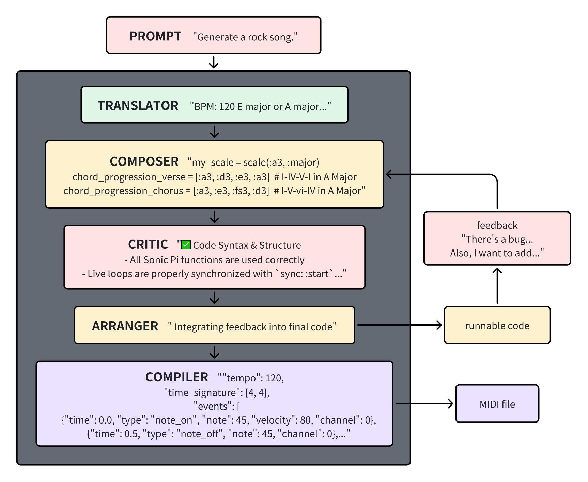
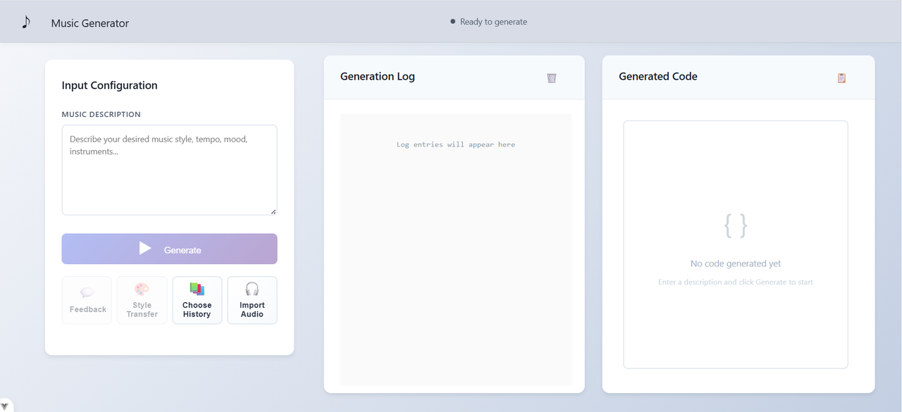
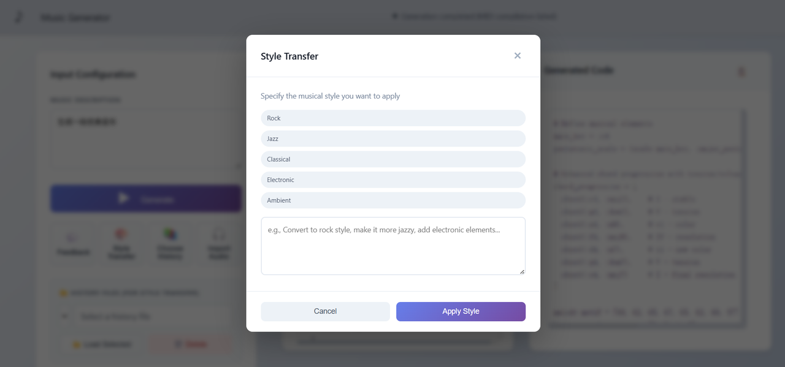
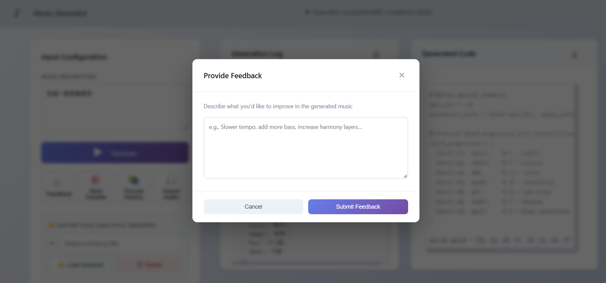
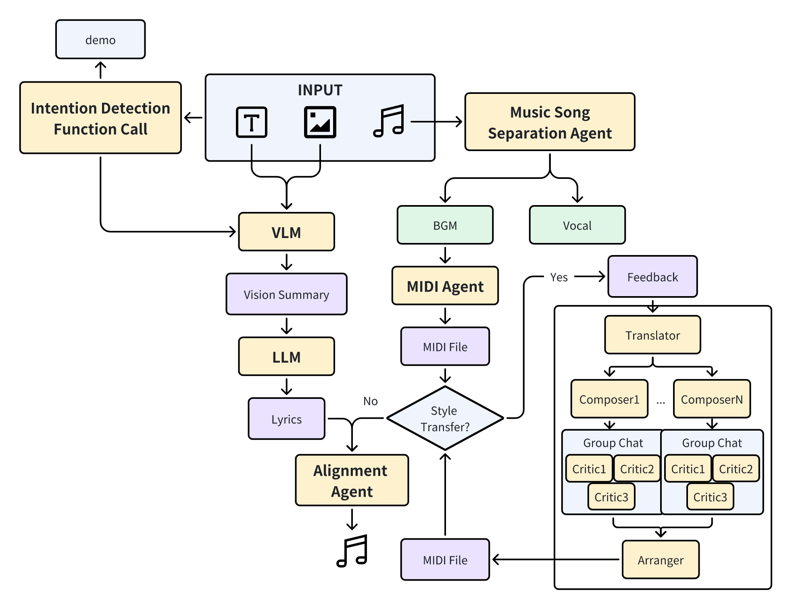

MUSICODE: AN INTERACTIVE AND ITERATIVE MUSIC-CODE TRANSLATION LIVE PLAY AGENT
Published:
This is the final project of COMP7607A Natural Language Processing. NLP课程期末项目。
👉PDF Download👈 👉
Self Assessment: This is a very rudimentary MAS system, which does not involve operating system process scheduling or context optimization, and to some extent, cannot even be called a MAS. The inspiration for MAS comes from AgentVerse, and the inspiration for the music generation part comes from ComposerX. The method part will be introduced later, which is a very simple hierarchical architecture, with some technical aspects such as OCR and intent understanding interspersed in between. One team member was specifically responsible for building the frontend, which is quite aesthetically pleasing. The result evaluation part was actually delayed until near the deadline due to personal reasons (I am the team leader), resulting in insufficient time for careful evaluation. Ideally, the similarity of music should be compared based on style, and there are some benchmarks specifically designed for this purpose, as well as some professional music metrics. 自我点评：这是一个非常简陋的MAS系统，不涉及操作系统进程调度，也不涉及上下文优化，甚至在某种程度上不能被称为MAS。。。MAS灵感来源于AgentVerse，音乐生成部分灵感来源于ComposerX。方法部分后面有介绍，就是一个非常简单的分层架构，中间插了一些OCR和意图理解等等技术层面的东西，有一位组员专门负责前端搭建，前端还挺美观的🤣。结果评估部分其实因为我个人原因（我是组长）一直拖延到ddl附近，导致没有时间仔细评估了。按理说，应该按照风格比对音乐的相似度，有一些专门用来做这个的benchmark，还有一些专业的音乐metrics。不过还是因为时间不多了😭，红豆泥私密马赛！！🧎🧎🧎🧎🧎🧎🧎
Project banner
Candidates
- Gao Zhaoyi
- Li Ruiheng
- Liu Weihao
- Liu Xinquan
- Zhao Mingze
- Zou Daiqing
Abstract
Recent advancements in AI-powered music generation have been predominantly driven by diffusion models, which often prioritize audio waveform synthesis and offer limited granularity in processing textual instructions. This paper addresses the critical gap in leveraging natural language for precise and semantically-aware musical composition and manipulation. We explore MUSICODE, a novel pipeline for purely language-driven music synthesis and style transfer, which utilizes structured code as an intermediate representation to bridge the semantic understanding of human intent and the generation of symbolic music notation. Our approach employs a hierarchical multi-agent architecture, where specialized agents with distinct roles—such as intent understanding, translation, composition, criticism, and arrangement—collaborate sequentially. This framework explicitly incorporates human-in-the-loop feedback, allowing the system to iteratively refine the generated music code based on auditory evaluation. To demonstrate its practicality, we have implemented a user-friendly front-end application that accepts multimodal contextual inputs and exports the final compositions as MIDI files. A decoupled backend service efficiently manages the agent orchestration and external function calls. For evaluation, we employ a cross-validation strategy using multiple established metrics and models to objectively record performance scores. Preliminary results indicate that the system achieves efficient convergence within 1-3 feedback iterations and generates musically coherent outputs, with the style transfer functionality particularly excelling, attaining high scores in fidelity and listener preference.
Methodology

Frontend



Future Works
We have some ideas that were not implemented due to time constraints. Firstly, we should modify the structure of MAS to separate musical elements such as melody and chords, allowing individual agents to generate them separately and then merge them by a final agent. This is the approach taken by ComposerX, but now this system can already generate all musical elements quite well during generation. Personally, I don’t think further separation will improve things. I’m even pessimistic because further separation would require more communication costs between agents, which may not necessarily yield better results than this single-agent code generation approach. Secondly, we should incorporate more technical elements, such as lyrics generation, TTS, and audio-text alignment on the music side, and multimodal integration like VLM on the model side. However, this still does not solve the fundamental problem, as user demands are only translated by a single agent without involving context optimization. That is, this MAS can only do one thing and nothing else. If we really want a general-purpose MAS, we might as well construct openclaw, lol😅 我们有一些构想，由于时间原因没有实现。首先，应该改一下MAS的结构，把旋律和弦什么的音乐元素分开，让单独的agent生成，最后由一个agent合并。这是ComposerX的做法，不过现在这个系统在生成时已经能很好地把所有音乐元素生成，我个人不认为继续拆分会变得更好，我甚至持悲观态度，因为再拆下去需要agent之间更多的通信成本，不一定会比这种单个agent代码生成的效果好。然后，就是加更多技术元素，音乐侧比如歌词生成、TTS、音声对齐什么的，模型侧比如VLM这些多模态加入。不过这样做依然没有解决根本问题，因为用户需求只被单个agent翻译了一下，没涉及上下文优化，就是这个MAS几乎只会做一件事，不会干其他的。如果真要那种通用MAS，估计要开始养龙虾了，哈哈😅
